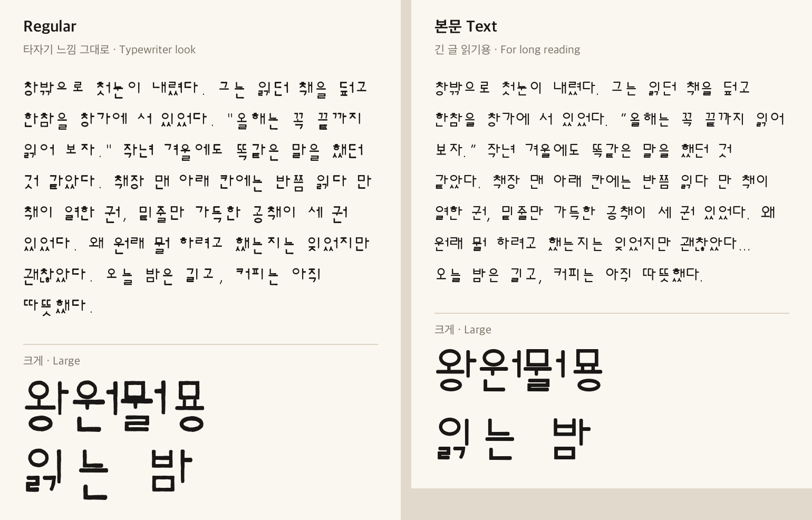
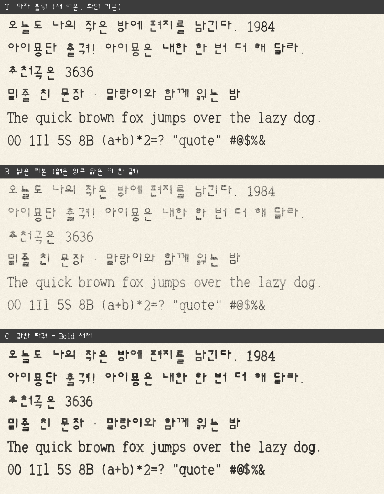

냄쿵타자기
Naemkung Typewriter
완전 무료수동 공병우식 타자기에 반해 취미로 만든 한글·영문 서체입니다. 개인이든 회사든, 상업 용도까지 누구나 무료로 쓸 수 있습니다.
직접 쳐 보기
종이를 누르고 자판으로 쳐 보세요. 글자마다 잉크가 조금씩 다르게 묻습니다.
찜콩
GitHub 저장소에 별(★)을 누르면 찜콩이 하나 늘어납니다. GitHub 계정이 있어야 누를 수 있습니다.
네 가지 판
본문 판 (Text, 0.35 추가)
탈네모꼴은 제목과 짧은 글에서는 맛이 살지만, 책처럼 긴 글에서는 줄이 들쭉날쭉해 눈이 쉽게 지칩니다. 특히 「곡·굴·원」처럼 가로 모음 아래 받침이 영문 꼬리 높이까지 내려가 아랫첨자처럼 보였습니다. 0.35 에서 냄쿵타자기에 본문 판을 더했습니다. 같은 획과 자음 모양을 쓰되, 긴 글을 읽기 좋게 짜임을 다시 잡았습니다.
- 받침이 있으면 초성·모음을 위로 올리고 받침을 키워, 글자마다 아랫선 차이를 크게 줄였습니다(반네모꼴)
- 한글 칸을 좁히고 초성을 키워, 글자 사이와 낱말 사이가 구분되게 했습니다
- 흔들림·거친 가장자리 없이 매끈하게, 획 굵기 차이도 줄였습니다
- 책에 자주 나오는 “ ” ‘ ’ … — 「 」 『 』 를 넣고, 마침표·쉼표 뒤 틈을 줄였습니다
창밖으로 첫눈이 내렸다. 그는 읽던 책을 덮고 한참을 창가에 서 있었다.
“올해는 꼭 끝까지 읽어 보자.” 오늘 밤은 길고, 커피는 아직 따뜻했다…

본문 판은 0.35 에서 처음 나온 판입니다. 읽다가 불편한 글자가 있으면 연락으로 알려 주세요.
견본
동해 물과 백두산이 마르고 닳도록
아이묭단 출격! 아이묭은 내한 한 번 더 해 달라.
추천곡은 3636
The quick brown fox jumps over the lazy dog.
0O 1Il 5S 8B (a+b)*2=? "quote" #@$%&
종이에 찍힌 모습을 흉내 낸 그림입니다. 위에서부터 새 리본, 낡은 리본, Bold 를 세게 친 모습입니다.

어떤 글꼴인가요
1950~70년대 세벌식(공병우식) 수동 타자기는 초성·중성·종성 활자를 정해진 높이에 따로 내려쳤습니다. 그래서 모든 글자의 윗선은 가지런하고, 아랫선은 모음과 받침에 따라 들쭉날쭉합니다. 냄쿵타자기는 이 「탈네모꼴」 모양과 활자가 종이를 친 자국을 닮게 만들었습니다.
다른 글꼴 파일이나 윤곽을 가져다 쓰지 않았습니다. 글자마다 획이 지나가는 선을 코드로 적고, 그 선에 굵기를 입혀 만들었습니다. 만드는 코드도 저장소에 함께 공개합니다.
- 현대 한글 11,172자, 한글 자모 51자, 영문·숫자·기호(ASCII)
- 고정폭: 영문 한 칸, 한글 한 칸이 각각 같은 너비(본문 판은 마침표·쉼표·줄임표·줄표만 폭이 다름)
- 0 은 가운데 점, 1·I·l 은 모양을 달리해 헷갈리지 않음
공병우 박사를 기리며
한글을 네모 틀에 가두지 않고, 생긴 대로 빠르게.
냄쿵타자기의 들쭉날쭉한 아랫선은 공병우 박사(1907~1995)의 세벌식 타자기에서 왔습니다. 공병우 박사는 우리나라 첫 안과 전문 의원을 연 안과 의사였습니다. 그런데 평생을 걸고 매달린 일은 한글을 기계로 빠르고 바르게 쓰는 길을 여는 것이었습니다.
그가 만든 세벌식 타자기는 초성·중성·종성을 따로 쳐서, 글자를 네모 틀에 억지로 맞추지 않고 한글이 생긴 대로 찍어 냈습니다. 모양이 고르지 않다며 「빨랫줄 글꼴」라는 놀림도 받았지만, 바로 그 속도와 정확함이 한글 기계화의 바탕이 되었습니다. 눈을 고치던 의사는 앞을 보지 못하는 사람을 위한 점자 타자기를 만들었고, 여든을 앞둔 나이에 매킨토시로 컴퓨터 세벌식 한글을 일구었습니다.
세상을 떠나면서는 자신의 죽음을 알리지 말고 장례식도 치르지 말라고 했습니다. 쓸 만한 장기와 시신은 기증하고, 남은 재산은 앞을 보지 못하는 사람들을 위해 쓰라고 남겼습니다. 이 글꼴은 그 마음에 보내는 작은 감사 편지입니다.
약력
| 연도 | 일 |
|---|---|
| 1907 | 평안북도 벽동군에서 태어남(1월 24일) |
| 1926 | 조선 의사 검정 시험 합격 |
| 1936 | 나고야 제국대학 의학박사 |
| 1938 | 공안과 개원 — 우리나라 첫 안과 전문 의원 |
| 1949 | 최초의 실용 세벌식 한글 타자기 개발, 국회의장상 |
| 1958 | 콘택트렌즈 첫 도입 시술, 한글 타자기 발명 공로로 대통령 표창 |
| 1959 | 한글학회 이사 |
| 1968 | 기계식 한영 겸용 타자기 발명 |
| 1971 | 기계식 한글 점자 타자기 개발 |
| 1974 | 외솔 문화상 |
| 1981 | 국민훈장 석류장 |
| 1980년대 | 세벌식 글자판을 미국 교포 사회에 보급, 매킨토시로 세벌식 글자꼴과 입력기 개발을 이끌고 젊은 개발자들을 도움 |
| 1987 | 제1회 서재필 상 |
| 1988 | 한글문화원 개설 |
| 1990 | 은관문화훈장 |
| 1995 | 3월 7일 세상을 떠남, 시신은 의학 교육에 기증. 금관문화훈장 추서 |
약력은 위키백과 「공병우」 문서를 따랐습니다. 태어난 해는 문서 안에 1906년으로 적힌 곳도 있습니다.
더 알아보기
냄쿵타자기는 개인이 취미로 만든 글꼴이며, 공병우 박사의 유족이나 관련 단체의 후원·승인을 받지 않았습니다.
라이선스 — SIL Open Font License 1.1
| 이렇게 써도 되나요? | |
|---|---|
| 문서·인쇄물·영상·포스터·로고·웹사이트에 사용 | 됩니다 |
| 회사·상업 용도로 사용 | 됩니다 |
| 앱·게임·제품에 글꼴 파일을 넣어 배포 | 됩니다 (라이선스 파일 동봉) |
| 고쳐서 새 글꼴로 배포 | 됩니다 (새 글꼴도 OFL 로) |
| 글꼴 파일만 따로 돈 받고 판매 | 안 됩니다 |
원문은 OFL.txt, 자세한 설명은 openfontlicense.org 에 있습니다. 출처 표기는 필수가 아니지만 남겨 주시면 기쁩니다.
다른 글꼴의 데이터를 쓰지 않고 코드로만 만들었습니다. 공병우 박사나 관련 단체와는 관계가 없습니다. 만든 방법과 권리 침해 신고 방법은 권리 고지에 있습니다.
베끼지 않았다는 증거도 공개합니다. 공개된 코드로 누구나 글꼴을 다시 만들면 배포 파일과 바이트 하나까지 같은 파일이 나오고, GitHub 가 올릴 때마다 이를 자동으로 확인합니다. 한글 글꼴 16종과 글자 2,412자를 겹쳐 비교한 결과도 함께 공개합니다. 자세한 내용은 원본 증명에 있습니다.
연락
칭찬, 재미있는 제안, 이 글꼴로 만든 작품 자랑은 언제든 환영합니다. 메일 jaykafka12@gmail.com 로 보내 주세요.
글자 모양 오류나 권리 관련 문제는 기록이 남도록 GitHub Issues 에 올려 주시면 더 빨리 확인합니다.
웹에서 쓰기
@font-face {
font-family: "Naemkung Typewriter";
src: url("NaemkungTypewriter-Regular.ttf") format("truetype");
font-weight: 400;
}
@font-face {
font-family: "Naemkung Typewriter";
src: url("NaemkungTypewriter-Bold.ttf") format("truetype");
font-weight: 700;
}
@font-face {
font-family: "Naemkung Typewriter Text"; /* 본문 판 */
src: url("NaemkungTypewriter-Text.ttf") format("truetype");
}